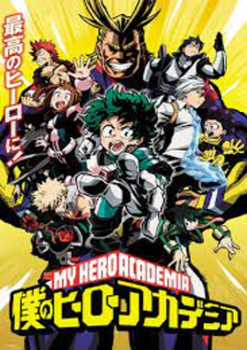
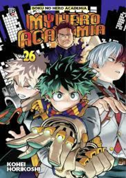
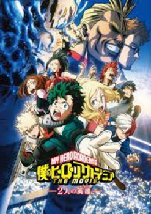
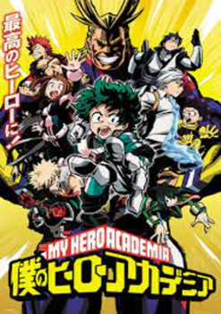
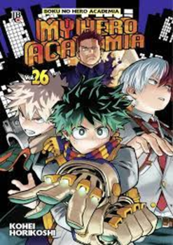
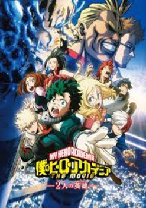

Anime
Atualmente, Boku no Hero tem quatro temporadas com um total de 88 episódios. Até o momento, o anime
conta a história até o arco do Festival Escolar e o início do Pro Hero. A Temporada 5 estreia em 27 de
março de 2021.
O anime está disponível no catálogo da Funimation e dublado. Apenas a quarta temporada e dois OVAs estão disponível
na Crunchyroll.
O anime de Boku no Hero é produzido pelo estúdio Bones (Fullmetal
Alchemist: Brotherhood, Soul Eater, Mob Psycho 100).
Mangá
O mangá de Boku no Hero, escrito e ilustrado por Kōhei Horikoshi, é publicado na
revista japonesa Weekly Shonen Jump desde julho de 2014.
Até o momento, 29 volumes foram
publicados. A obra ainda não foi concluída.
No Brasil, o mangá é publicado pela JBC.
Filme/Jogo
Boku no Hero tem dois filmes: 2 Heróis e Heroes Rising.
O
primeiro se passa nas férias de verão da U.A. Aqui, Midoriya e All Might visitam a I-Expo, uma feira em
uma ilha remota destinada a exibir individualidades e tecnologias que fortalecem estes poderes. Claro, o
jovem e o herói encontram outros alunos da turma de Deku, mas vilões ameaçam a exposição.
2
Heróis estreou no Brasil em 2019. O filme está disponível no catálogo do Telecine.
Boku no Hero possui um jogo chamado My Hero One's Justice, disponível para Nintendo
Switch, PlayStation 4, Pc e Xbox One.